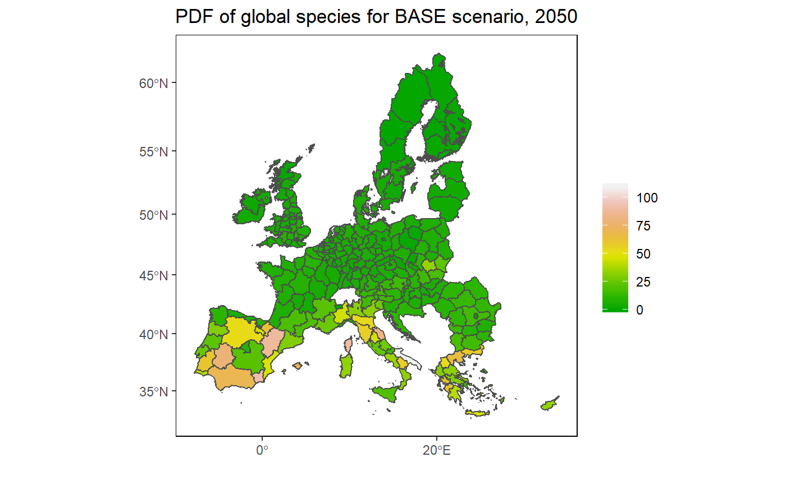
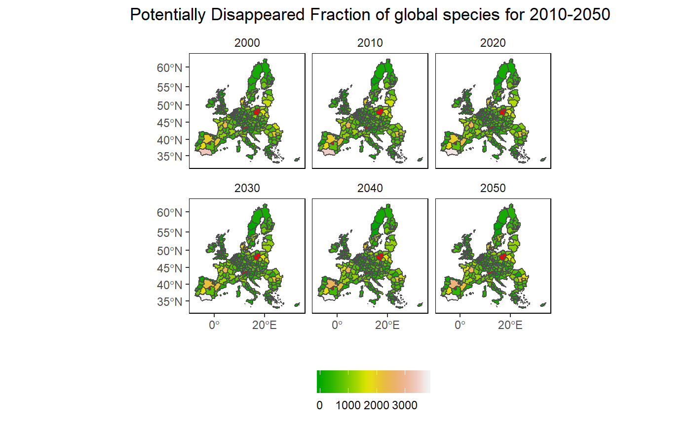
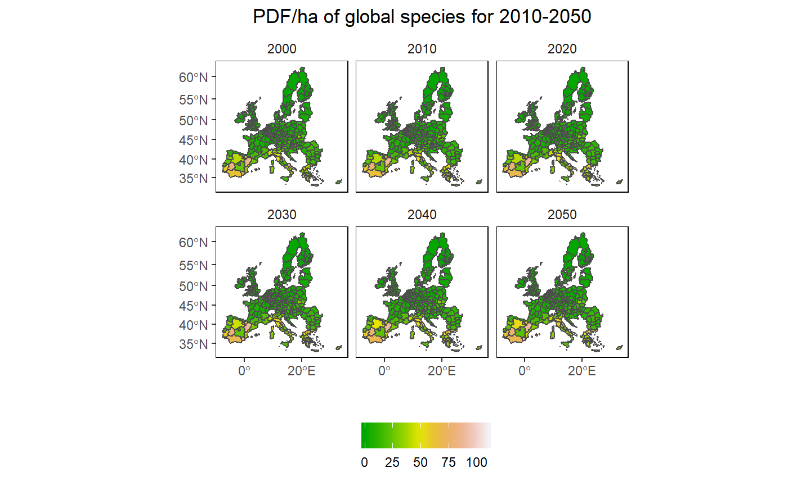
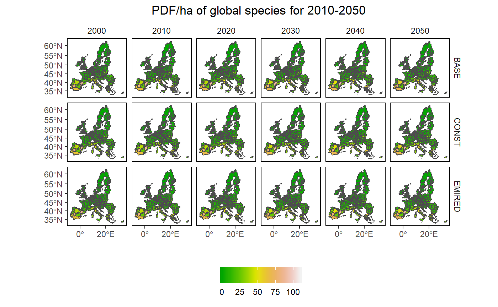

rglobiom3.RmdFor some projects we want to create a map of EU NUTS level results produced by GLOBIOM. This vignette provides several examples on how to do this. The EU NUTS map is part of the package and can be loaded using buildin commands (see below). The package also includes data on potentially disappeared fraction of global species (PDF/ha) for three scenarios (2010-2050) at the EU Nuts region (eu_nuts_pdf) from Di Fulvio et al. (2019), which will be used in the example.
We use the sf package for most of the vector (e.g. polygon) processing so it needs to be loaded first. The package can be easily combined with ggplot2 the core plotting package in R.
Before we can create the map we need to: (1) load the EU NUTS polygons (part of the package); (2) load the example data (part of the package) and (3) connect the the two.
library(rglobiom)
library(ggplot2)
library(sf)
library(dplyr)
# Load the EU NUTS polygons
eu_nuts_poly <- st_read(system.file("shp", "NUTS2_revised.shp", package = "rglobiom"))
#> Reading layer `NUTS2_revised' from data source `c:\Temp\RtmpWUwxwz\temp_libpath2c3477a16172\rglobiom\shp\NUTS2_revised.shp' using driver `ESRI Shapefile'
#> Simple feature collection with 260 features and 8 fields
#> geometry type: MULTIPOLYGON
#> dimension: XY
#> bbox: xmin: -1650363 ymin: 3889411 xmax: 2282855 ymax: 7828470
#> epsg (SRID): 32633
#> proj4string: +proj=utm +zone=33 +datum=WGS84 +units=m +no_defs
# Load the test data from the into the global R environment (i.e. it will display in RStudio so you can see it)
data("eu_nuts_pdf", package="rglobiom")
# Join the data. The variable names in the polygon file and the data file are the same (NUTS2) so they are automatically linked. Note that the order is important because otherwise the polygon format will be lost.
eu_nuts <- left_join(eu_nuts_poly, eu_nuts_pdf)# Prepare data. We select only the year 2050 and the BASE scenario.
# We remove NA values, if any.
df <- eu_nuts %>%
filter(year == 2050, scenario == "BASE", !is.na(value))
# Create the map. Note that we plot the map twice (2xgeom_sf). The first call ensures that the full map is depicted (with background color white). As we used a filter, it is possible we removed polygons for which data was not available, which would otherwise be dropped.
ggplot() +
geom_sf(data = eu_nuts_poly, colour = "grey30", fill = "white") +
geom_sf(data = df, colour = "grey30", aes(fill = value)) +
scale_fill_gradientn(colours = terrain.colors(10)) +
labs(fill = "", x = "", y = "", title = "PDF of global species for BASE scenario, 2050") +
theme(panel.grid.major = element_blank(),
panel.grid.minor = element_blank(),
panel.background = element_blank(),
panel.border = element_rect(colour = "black", fill = "transparent"),
plot.title = element_text(hjust = 0.5))
Like in the original figure 2, we add bin the data to better reveal the spatial pattern. I also use a similar color palette as in the original figure.
# Create bins
interval <- c(0, 1.5, 3, 6, 9, 12, 15, 20, 30, 60, 100, 110)
# Create legend labels
lab <- paste(interval, interval[-1], sep = "-")[c(1:11)]
# As the palette has only 9 colors and we need 12, we need to interpolate additional colors.
library(RColorBrewer)
n_col = length(interval)
getPalette = colorRampPalette(brewer.pal(9, "YlOrBr"))
# Add the binned data
df <- df %>%
mutate(value2 = cut(value, interval, include.lowest = T))
# Create the map
ggplot() +
geom_sf(data = eu_nuts_poly, colour = "grey30", fill = "transparent") +
geom_sf(data = df, colour = "grey30", aes(fill = value2)) +
scale_fill_manual(values = getPalette(n_col), labels = lab) +
labs(x = "", y = "", fill = "PDF/ha" , title = "EU nuts abandoned land for 2050") +
theme(panel.grid.major = element_blank(),
panel.grid.minor = element_blank(),
panel.background = element_blank(),
panel.border = element_rect(colour = "black", fill = "transparent"),
plot.title = element_text(hjust = 0.5),
legend.position = c(0.9, 0.6),
legend.background = element_rect(fill = "transparent"),
legend.text=element_text(size=6)) 
In this example we create multiple maps that show the change in PDF/ha over time and in space. As we are increasing the number of maps, we first ‘simplify’ the polygons to speed up the processing time. To simplify further (and speed up), increase the dTolerance parameter. The EU NUTS polygon is quite detailed (i.e. capturing complex border patterns), which consume a lot of memory when plotting. This information is not needed for exploratory mapping.
# Simplify the map
eu_nuts_poly_s <- st_simplify(eu_nuts_poly, dTolerance = 5000)
# Select the BASE scenario
df2 <- left_join(eu_nuts_poly_s, eu_nuts_pdf) %>%
filter(scenario == "BASE" , !is.na(value))
# plot
ggplot() +
geom_sf(data = eu_nuts_poly_s, colour = "grey30", fill = "red") +
geom_sf(data = df2, colour = "grey30", aes(fill = value)) +
scale_fill_gradientn(colours = terrain.colors(10)) +
labs(fill = "", x = "", y = "", title = "PDF/ha of global species for 2010-2050") +
facet_wrap(~year) +
theme(panel.grid.major = element_blank(),
panel.grid.minor = element_blank(),
panel.background = element_blank(),
panel.border = element_rect(colour = "black", fill = "transparent"),
plot.title = element_text(hjust = 0.5),
strip.background = element_rect(fill = "transparent"),
legend.position = "bottom")
Now we show all maps covering both the time and scenario dimension. As the maps are very small, this is probably only useful if there are large differences over time and space that can be easily spotted.
# Remove NA values
df2 <- left_join(eu_nuts_poly_s, eu_nuts_pdf) %>%
filter(!is.na(value))
# plot
ggplot() +
geom_sf(data = eu_nuts_poly_s, colour = "grey30", fill = "red") +
geom_sf(data = df2, colour = "grey30", aes(fill = value)) +
scale_fill_gradientn(colours = terrain.colors(10)) +
labs(fill = "", x = "", y = "", title = "PDF/ha of global species for 2010-2050") +
facet_grid(scenario~ year) +
theme(panel.grid.major = element_blank(),
panel.grid.minor = element_blank(),
panel.background = element_blank(),
panel.border = element_rect(colour = "black", fill = "transparent"),
plot.title = element_text(hjust = 0.5),
strip.background = element_rect(fill = "transparent"),
legend.position = "bottom")